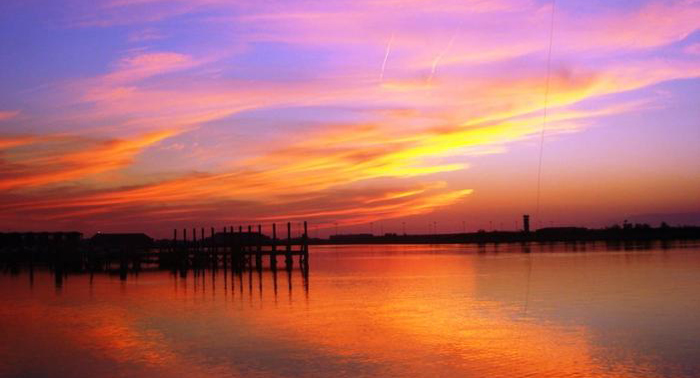
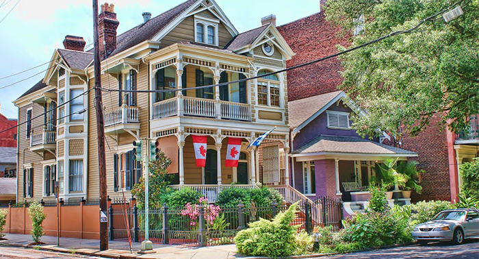
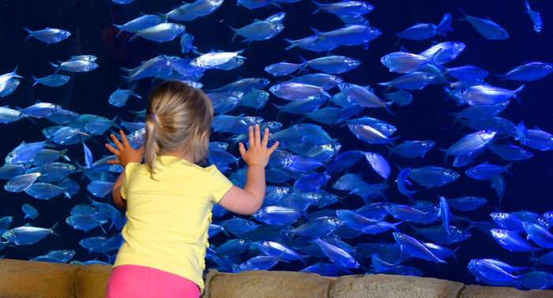
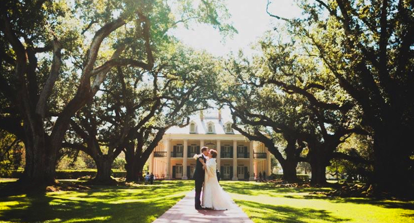
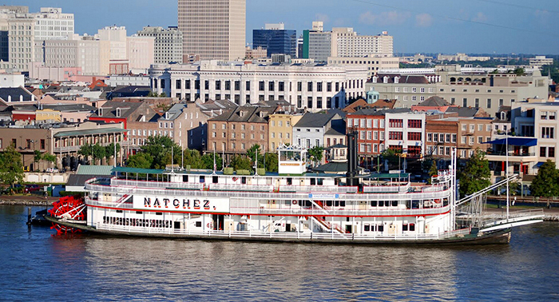
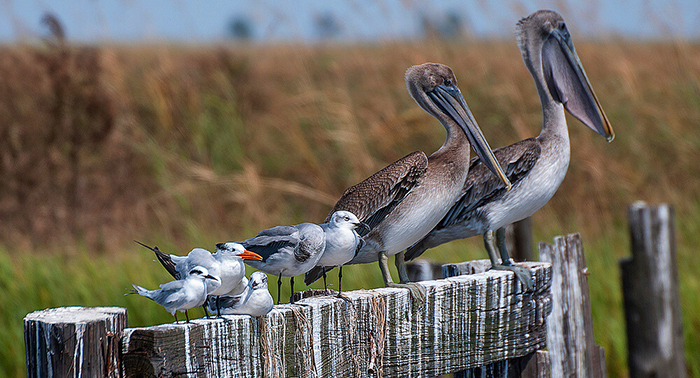
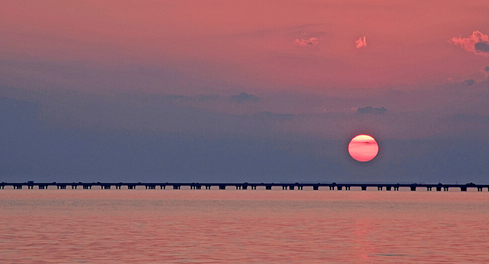
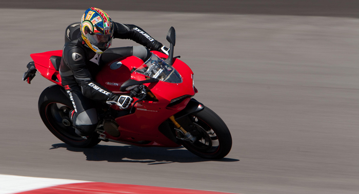
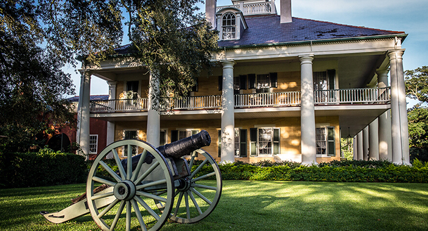

路易斯安那州位于墨西哥湾沿岸，以对比强烈的文化、地理景观著名。你既能感受嘉年华会的狂欢，也能体验荒野沼泽地中的寂静。通过路易斯安那丰富的徒步旅行、钓鱼、骑自行车、观鸟场所和自然小径，你便可以看出为什么该州的昵称恰好是“运动爱好者的天堂”了。


庞恰特雷恩湖是美国密西西比河河口湾北岸的一个咸水湖。面积630 平方英亩（约1,630平方公里），平均深度12至14英寸（约3.7至4.3米），一些航道因疏浚而更深。全湖属路易斯安那州管辖，南岸为都市新奥尔良。庞恰特雷恩湖可供垂钓鱼类繁多，亦多水鸟如鹈鹕。跨越湖面的庞恰特雷恩湖堤道（又名：庞恰特雷恩湖桥）是世界吉尼斯纪录的第一长桥梁。

带着你的相机来新奥尔良最古老的街区——马里尼街区卡擦几张照片吧！马里尼街区的建筑风格以旧时期法国、西班牙为主，Wide Elysian Fields Avenue是马里尼的主要街区。马里尼氛围独特，有色彩鲜艳形貌各异的小酒馆，有许多艺术家比如蓝调歌手Lizzie Miles、技术精湛的厨师及大量的嬉皮士在这里居住，不同的文化伴随着时间逐渐融入在马里尼街区，造就了它现在的样子。

来到新奥尔良，一定要参观下美国五大水族馆之一的奥杜邦水族馆。它毗邻法国区，由奥杜邦家族所有，是家庭度假的好去处。水族馆内养殖了成千上万的水上生物，包括生活在加勒比海、亚马逊雨林、密西西比河河岸的数千种鱼类、爬虫、鸟类，以及多种濒临绝种的动物。此外，馆内还有许多展览，帮助您在欣赏之余能够更进一步了解水生生物。

大种植园是新奥尔良另一著名的景观，如小说《飘》中描写的那种豪华的大房子，庭院里种着葱郁的树木，周围是广袤的棉花田、甘蔗田。现在，有八个历史性的战前种植园向世人展现美丽的密西西比河畔种植园生活。其中，最著名的种植园当属橡树街（Oak alley），门口一条由两排300多岁老橡树枝蔓错落布成的林阴大道气势宏伟，《夜访吸血鬼》等多部影片都在这里取过景。

若想悠闲地欣赏新奥尔良的沿岸风光，花上两个小时搭乘沿密西西比河航行的那切兹蒸汽船是个相当经典的游览方式。沿途，你可以一边聆听爵士音乐，品尝当地美食，一边观看两岸的美丽而浪漫的地标建筑：圣路易斯大教堂、杰克森酒厂商城、月牙城大桥等。

国家野生动物保护区建于1994年，由美国鱼类及野生动物保护组织倡议建立，是庞恰特雷恩湖北岸最大的原生态自然区域，努力为这块沼泽地里的野生动物提供保护。这里原本只有12,000英亩（约49平方千米），现在这块保护区已经扩大到19,000英亩（约77平方千米）。Big Branch Marsh国家野生动物保护区内包含沙滩、草床、沼泽、硬木林山丘、松林泥炭地，是户外旅行者探险的好地方！

庞恰特雷恩湖堤道，又被称为庞恰特雷恩湖桥，位于美国路易斯安那州庞恰特雷恩湖上，连接新奥尔良和曼德韦尔，全长38.35公里，被认为是世界上最长的桥而收录在吉尼斯世界纪录大全中。庞恰特雷恩湖桥由两座平行桥梁组成，其中1号桥和2号桥分别于1956年和1969年建成通车，2号桥比1号桥约长16米，为38,422米。庞恰特雷恩湖堤道非常的繁忙，天天堤道上都是车来车往，每天的通行量约43,000辆，成为路易斯安那州最重要的交通枢纽。租车自驾路易安娜的朋友可以去这座吉尼斯纪录最长的桥上兜兜风。

新奥尔良赛车公园位于路易安娜州艾文谷（Avondale）市，距离新奥尔良市中心有20分钟左右车程，该公园于2011年12月左右建立。摩托车越野公园（Red Creek NOLA）也在新奥尔良赛车公园区域内，公园提供摩托车、卡丁车的试驾体验。这里有专业人士为新手提供指导，还会将你的全程体验录制成视频，不过视频是收费的，需要99刀。

Houmas House种植园花园能带给游客的绝不仅是壮观的战前之旅。当您走进糖之宫殿（Sugar Palace）的16间屋子，观赏满屋上了年头的古董和路易斯安那艺术品，您就能体会到南方昔日的光辉。在园中的路易斯安娜种植园（Louisiana Plantation）待上一整天，逛逛38英亩（约合15万4千平方米）的富饶田园、池塘和一条壮丽的橡树小径。饮一杯冰镇薄荷酒，感受密西西比吹来的凉风，游走在古老橡树的树荫之下。